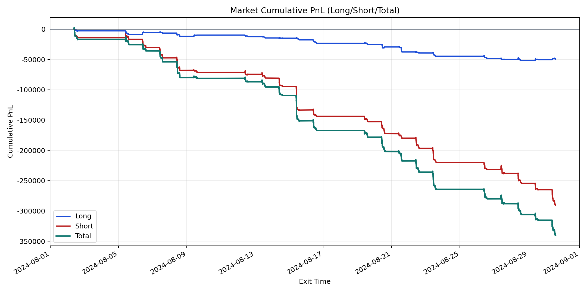
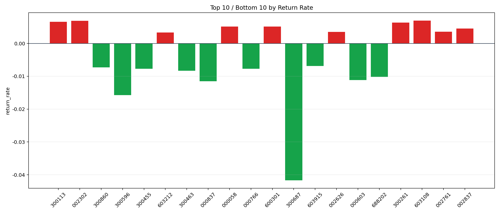

| repo_root | /home/haoranyou/data/output/dynamic_AUM_TAKER_index1000 |
|---|---|
| period_months | 1 |
| period_label | 2024-08-02_to_2024-08-30 |
| start_time | 2024-08-02 09:45:32 |
| end_time | 2024-08-30 14:41:03 |
| n_trades | 11047 |
| n_symbols | 327 |
| total_pnl | -340158.106550002 |
| long_total_pnl | -50029.88929999933 |
| short_total_pnl | -290128.21725000266 |
| total_entry_notional | 190984499.00000003 |
| long_entry_notional | 33498749.0 |
| short_entry_notional | 157485750.0 |
| total_return_rate | -0.0017810770420169124 |
| long_return_rate | -0.0014934853029884589 |
| short_return_rate | -0.0018422505988637237 |
| top_symbols_by_return | ["603108", "002302", "300113", "300261", "600301", "000058", "002837", "002761", "002626", "603212"] |
| bottom_symbols_by_return | ["300687", "300596", "000837", "000603", "688202", "300463", "300455", "000766", "300860", "603915"] |

